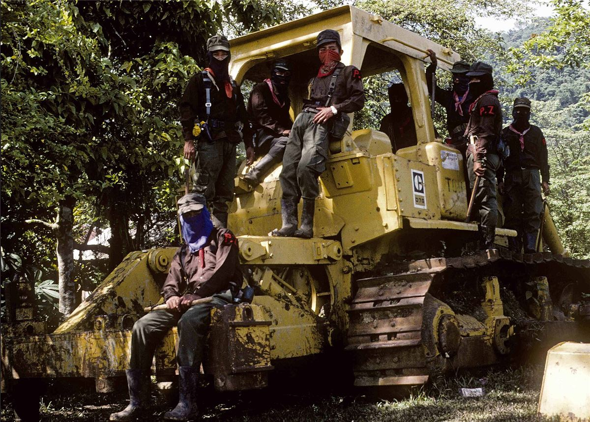

Le Chiapas, au sud du Mexique, est l'un des États les plus riches en ressources et les plus pauvres en revenus du pays. Les peuples mayas qui y vivent (tzotzil, tzeltal, chol, tojolabal, zoque, mam) ont subi pendant des siècles la dépossession de leurs terres par les grands propriétaires.
Les zapatistes ne se disent pas anarchistes. Mais leur refus de prendre le pouvoir d'État et leur pratique de l'autogouvernement parlent à beaucoup de libertaires dans le monde.
Des origines à la rencontre
En 1983, un petit groupe de guérilleros d'inspiration marxiste s'installe dans la forêt Lacandone. Au contact des communautés indigènes, il change profondément : ce sont les communautés qui transforment l'organisation, pas l'inverse. L'EZLN (Armée zapatiste de libération nationale) prend le nom d'Emiliano Zapata, héros paysan de la révolution mexicaine de 1910 et de son mot d'ordre : la terre à qui la travaille.
1er janvier 1994 : ¡Ya basta!
Le jour où entre en vigueur l'accord de libre-échange nord-américain (ALENA), des milliers d'insurgées et d'insurgés indigènes occupent San Cristóbal de las Casas et plusieurs autres villes du Chiapas. Après douze jours de combats, un cessez-le-feu est signé sous la pression d'immenses manifestations dans tout le Mexique. L'EZLN choisit alors la parole plutôt que la guerre : communiqués, rencontres, ouverture au monde.
Les accords trahis et l'autonomie de fait

En 1996, les accords de San Andrés sur les droits et la culture indigènes sont signés avec le gouvernement, puis jamais appliqués : la réforme constitutionnelle de 2001 les vide de leur contenu. Les zapatistes en tirent la conclusion : ils construiront l'autonomie sans demander la permission. En 2003, ils créent les Caracoles et les Conseils de bon gouvernement.
Chronologie
- 1983Arrivée du premier noyau de l'EZLN dans la forêt Lacandone.
- 1993Loi révolutionnaire des femmes, adoptée par les communautés.
- 1er janvier 1994Soulèvement, le jour de l'entrée en vigueur de l'ALENA.
- 12 janvier 1994Cessez-le-feu après douze jours de combats.
- 1996Accords de San Andrés, jamais appliqués. Rencontre « intergalactique » pour l'humanité et contre le néolibéralisme.
- 22 décembre 1997Massacre d'Acteal : 45 indigènes tués par des paramilitaires.
- 2001Marche de la couleur de la terre jusqu'à Mexico.
- 2003Création des cinq Caracoles et des Conseils de bon gouvernement.
- 2005Sixième déclaration de la forêt Lacandone : appel à s'organiser « en bas et à gauche ».
- 2019Annonce de nouveaux centres autonomes : douze caracoles au total.
- 2021Voyage pour la vie : une délégation zapatiste traverse l'Atlantique en bateau et parcourt l'Europe.
- Fin 2023Les zapatistes dissolvent les municipalités autonomes et les Conseils de bon gouvernement, au profit d'une nouvelle structure partant des communautés, et lancent « le commun ».
En vidéo
Quatre vidéos de la chaîne Hydre aux mille têtes, une histoire de la révolte, de l'origine du mouvement à aujourd'hui. Clique sur une vidéo pour la lancer : rien n'est chargé depuis YouTube avant ton clic.
Toute la playlist sur YouTube ↗
Dans ce dossier
Sources et pour aller plus loin
Lire
- La Rébellion zapatiste, Jérôme Baschet, Flammarion, collection Champs.Par un historien qui enseigne au Chiapas depuis des décennies : la meilleure introduction en français.
- EZLN : 20 et 10, le feu et la parole, Gloria Muñoz Ramírez.L'histoire du mouvement racontée par une journaliste qui a vécu dans les communautés.
Sur le web
- Enlace ZapatistaLe site officiel des zapatistes : tous leurs communiqués, souvent traduits en français.
- L'EZLN sur WikipédiaL'histoire du mouvement.
- CSPCLLe Comité de solidarité avec les peuples du Chiapas en lutte, à Paris : informations et soutien.
Dossier rédigé par la bande à Mamie à partir de travaux d'historiennes et d'historiens et de textes des mouvements concernés. Libre de reproduction.